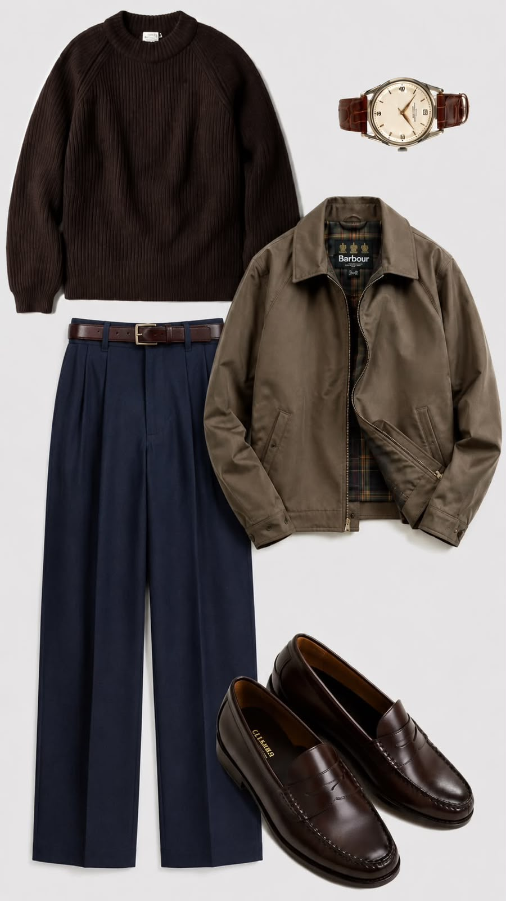
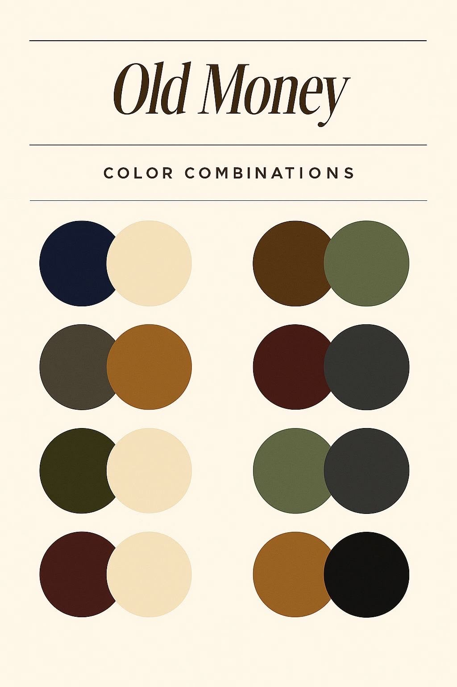
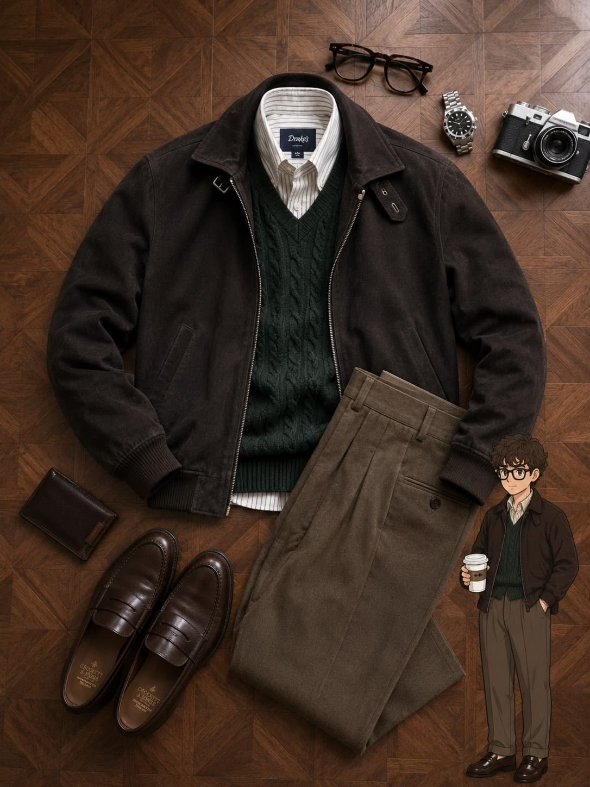

The Inspiration Edit
Build a look, not a trend.

Old-Money Layers
Dark chocolate, forest green, and textured knits.

Color, Considered
Pair cream with olive, or brown with beige.

Warm Minimalism
One textured piece can make a simple outfit stand out.